최신 인수 · 2026-10-02: 관계선 마우스 선택·C# 선언 정보·소유·반복 호출·구조 관계 근거를 보강하고 현재 앱에 적용했습니다. SMSR rev61·AO3 rev11 재색인 결과는 아래11절을 확인하세요. 미해소 호출은 남으며 새 세션 자동 인식과 독립 HTML 직접 열기는 사용자 지정 제외 사항입니다. 이전10절 수치는 당시 이력입니다.
2026-10-01 · 전체 계획 · 이전 F2/F3/F5/F6 기록 · 날짜별 개발 이력
소스 구현·격리 시험 및 승인된 운영 실행본 배포 결과입니다. 2026-10-01 17:50 KST에 F2~F8 Release 실행본을 동일 경로에 적용·재시작했습니다. 기존 지식 색인은 그대로 유지했으며 새 분석 결과로 자동 재색인하지 않았습니다. Codex 전역 스킬/훅·앱 설정·Git 게시는 변경하지 않았습니다. 로컬 도구·모델과 누락된 확장 문법은 설치·검증했습니다. 최종 소스 시험은 src/SMSR.App/bin/GraphifyRemaining22, 배포 후보는 artifacts/graphify-deploy-candidate-20261001-1740입니다. 새 Codex 세션 스킬 실사용, 독립 HTML 직접 열기, 기존 프로젝트 재색인은 별도 인수입니다.
| 구간 | 동작과 검증 | 경계 |
|---|---|---|
| F4 이미지·스캔 PDF | 로컬 Tesseract OCR 텍스트·픽셀 영역과 PDF 페이지/영역을 반환합니다. 해시를 확인한 PDF 래스터 근거 화면에서 선택 영역을 강조합니다. 자체 Validate→Store→Report 이미지와 스캔 PDF의 글자·영역을 실제 추출·브라우저 대조했습니다. | OCR은 기계 인식이며 정확도 보장이 아닙니다. 그림의 의미 해석은 호스트가 제출한 후보입니다. 이미지 크기 메타데이터를 설계 이유로 확정하지 않습니다. |
| F4 음원·영상 | 설치된 로컬 Whisper Tiny/CPU 전사, 시간 구간·원문 재생 링크, FFmpeg 표본 프레임과 영상 음원 전사를 연결했습니다. 실제 로컬 합성 한글/영문 음원, 무음·누락 모델·손상 입력·영상 자료 검사와 음원 2초 근거 이동을 확인했습니다. | 전 영상 장면/동작 이해가 아니라 제한된 프레임·전사입니다. 모델 품질에 따라 오인식할 수 있습니다. runtime은 모델을 자동 다운로드하거나 파일을 provider에 전송하지 않습니다. |
| F4 의미 저장·최신성 | 기존 문서 의미 제출을 재사용해 이미지/음원 개념·관계를 위치·인용·원문 해시·리비전과 함께 원자 저장합니다. 실제 호스트 합성 자료 추출을 제출·조회했습니다. 실패 결과는 자동 성공/재시작으로 바꾸지 않고 명시 재시도를 받습니다. 모델·도구 메타데이터 지문과 현재 인용 일치를 재검사하며 불일치는 stale입니다. | 일반 색인이 모든 문서/미디어에 의미 모델을 무인 실행하지 않습니다. 의미 추출은 호스트가 명시 제출합니다. host 추출 방법 라벨과 실제 모델 ID/추론 강도는 다르며 미제공 모델·토큰은 unknown입니다. 런타임 지문은 크기·mtime 변경 감지로, 매번 전체 모델의 SHA를 검증하는 무결성 기능은 아닙니다. |
| F5-5 보고서 | 같은 저장 리비전의 그룹·핵심 구성요소·그룹 사이 연결·설계 이유·coverage/제한을 생성합니다. HTTP/MCP와 찾기의 접힌 보고서 화면을 검증했습니다. | 중요도·그룹은 정적 구조 통계입니다. 실제 역할·실행 순서나 없는 설계 이유를 창작하지 않습니다. 현재 파일은 근거를 열어 재확인합니다. |
| F6 스킬 | 기존 smsr-query에 smsr-explain·smsr-impact·smsr-maintain·smsr-report를 추가했습니다. 다섯 스킬 validator, 실제 MCP 설명/영향/진단/보고서, 없는/오래된 근거·피드백 교훈·질문 원문 미저장 검사를 통과했습니다. | 질문만으로 색인·수정·provider·감시·훅 설치를 승인하지 않습니다. 현재 세션 목록에 다섯 스킬이 노출되지만 새 세션에서 실제 사용한 인수와는 구분합니다. |
| F7 감시·배포 기능 | 기본 꺼짐인 색인 프로젝트 감시, 3초 debounce, 생성/변경/rename/삭제·overflow, 기존 색인 gate/범위 재사용, 종료·설정 복구를 구현했습니다. 스킬 Preview/Install/Replace/백업/Rollback을 격리 임시 경로에서 검사했습니다. | 전역 훅/스킬 미적용. 감시는 사용자가 켠 색인 범위를 갱신하며 문서 의미 모델을 자동 실행하지 않습니다. 오류 시 기존 색인을 보존하고 상태를 표시합니다. 무제한 감시가 아닙니다. |
| F8 화면·산출물 | 질문·보고서·감시·내용 근거·선택 범위 내보내기를 기존 찾기에 접힌 카드로 통합했습니다. 전체/선택 JSON·독립 HTML·SVG·GraphML·Wiki/Obsidian ZIP을 생성합니다. 노드 상세 선택 시 작업 맵 스크롤을 보존하고 이력 접힘 상태를 유지합니다. | 독립 HTML 파일 직접 열기는 브라우저 file:// 보안 정책으로 차단되어 우회하지 않았습니다. 다운로드 및 독립 탐색 코드의 그룹/검색/페이지/키보드/상세 검사는 통과했으며 사용자 직접 열기는 남았습니다. |
read_graph_media 또는 read_graph_document → 호스트 추출 → submit_graph_document_semantics → get_graph_document_semantics로 검증·저장합니다. 원문/지문/인용이 달라지면 재분석합니다.FFmpeg/FFprobe는 기존 설치를 사용했습니다. 사용자 승인 후 Tesseract 5.4.0.20240606, faster-whisper 1.2.1, CTranslate2 4.8.2, PyAV 16.1.0, PDFium 4.30.0, Pillow 12.3.0, pypdf 6.16.1 및 로컬 모델을 설치했습니다. 새 다운로드는 모델과 패키지의 수신이며 사용자 프로젝트 파일을 외부에 업로드하지 않았습니다. 호스트 의미 검증 자료는 자체 생성 이미지/합성 음원입니다. Codex 호스트 자체가 완전 오프라인 모델이라는 뜻은 아닙니다.
Systran/faster-whisper-tiny 고정 리비전 d90ca5fe260221311c53c58e660288d3deb8d356.tesseract-ocr/tessdata_fast 고정 리비전 87416418657359cb625c412a48b6e1d6d41c29bd.smsr-model-manifest.json에 보존합니다. 설치 스크립트: scripts/install-graph-media.ps1 -InstallOcr -DownloadModels. 실행 분석 중 자동 다운로드는 없습니다.운영 DB의 읽기 전용 사본에서 최종 기능을 검사했습니다. 재색인·원문 수정 없이 기존 저장 리비전만 조회했습니다. 이전 F2 새 추출 결과(31,399노드 등)와 다른 데이터이며 호출 완전성 비교가 아닙니다.
| 항목 | SMSR | AO3.5_Main |
|---|---|---|
| 저장 리비전 / 노드 / 관계 | 59 / 5,124 / 15,063 | 9 / 20,406 / 48,711 |
| 전체 JSON / 소요 | 6,803,733 bytes / 375.15ms | 24,650,719 bytes / 976.30ms |
| 선택 범위20회 p95 | 160.31ms | 476.14ms |
| 보고서 / 그룹 | 3,103.23ms / 252 | 7,524.07ms / 1,021 |
| 호스트 peak | 167,694,336 bytes | 418,316,288 bytes |
단일 로컬 측정이며 부하/환경에 따라 바뀝니다. 호스트 peak는 Python 자식을 제외합니다. 측정 JSON · 실제 로컬 미디어 검사.
| 요구 | 근거와 상태 |
|---|---|
| R01 스킬 | 다섯 스킬 계약·실제 MCP 검사 통과. 현재 세션 목록 노출 확인, 새 세션 실사용은 사용자 환경 인수 대기. |
| R02 문서 의미 / R03 문서 입력 | 원문/좌표·제출·저장·캐시·변경/삭제 인수, Office/PDF 안전성 검사 통과. 의미 모델 자동 실행은 아님. |
| R04 미디어 | 이미지·PDF OCR, 한글/영문 전사·영상 표본/음원, 실제 합성 자료 의미 제출·조회와 근거 화면 통과. 전면 장면 이해·오인식 없는 인식은 보장하지 않음. |
| R05 질문 / R06 설명 | 어휘·동명/없음·근거 묶음·설명/영향/MCP 검사 통과. 알 수 없는 역할·이유는 미확인. |
| R07 발견 / R08 그룹 | 이전 대형 실제 작업기·그룹 탐색 + 이번 같은 리비전 보고서/범위 검사 통과. 중요도는 실행 빈도 아님. |
| R09 정보 / R10 hyperedge | 세부 종류·출처·참여 역할 원자 저장·기존 지식 회귀·내보내기 검사 통과. |
| R11 지원 범위 | 고정 Graphify 표본 대조 결과를 유지. 운영 Python의 누락4엔진 설치·추출기101/103가용·추가26형식 원본 대조·pip check 통과. 기존 그래프는 다음 색인 때 새 버전으로 재구축하며 모든 형식 정확도를 뜻하지 않음. |
| R12 피드백 / R13 감시 | 교훈/stale/원문 질문 미저장, 실제 파일 변경·복구·명시 설정과 격리 설치/롤백 통과. 전역 스킬/훅 미적용. |
| R14 공유 | 전체/선택 JSON·HTML·SVG·GraphML·Wiki/Obsidian 생성 및 오프라인 탐색 코드 통과. file:// 직접 열기는 사용자 확인 대기. |
최종 Remaining22 빌드 경고·오류0. 문서/미디어·보고서·감시·실제 SQLite 쓰기 잠금/복구·HTTP/MCP 인수 종료0. 동일 기능 Remaining21의 기존 그래프/지식/추적 회귀 종료0. Python 입력 보호/실제 미디어, Node11개와 다섯 스킬 validator·격리 설치/복구 검사 통과. 실행 출력별 결과는 개발 이력에 구분합니다.
Tesseract의 TSV 설정 파일 누락은 출력 플래그로 해결했고 어두운 합성 그림 글자는 제한된 두 번째 OCR로 보완했습니다. PyAV19의 전사 API 불일치는16.1.0으로 고정했습니다. PDFium4.30 컨텍스트와 과소 메모리 제한, 음원/영상 저장 종류 검증 누락, 빈 PDF의 메타데이터 오판, 미디어/내보내기 JS 자산 경로 누락을 수정하고 다시 검사했습니다. 원문 지문/보호를 완화하지 않았고 실패를 성공으로 집계하지 않았습니다.
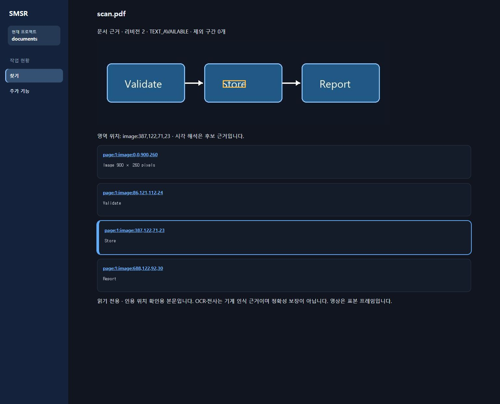
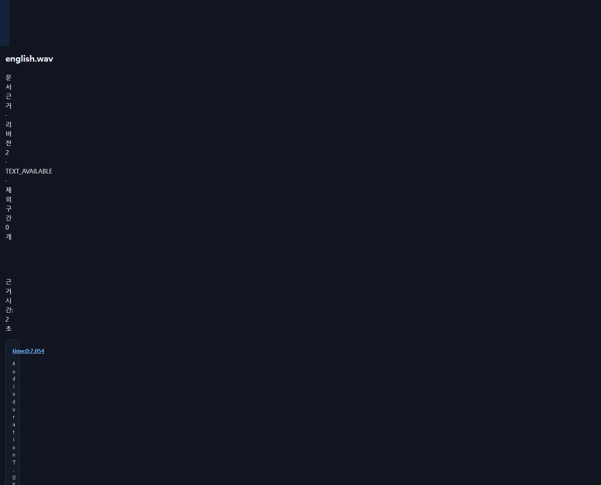
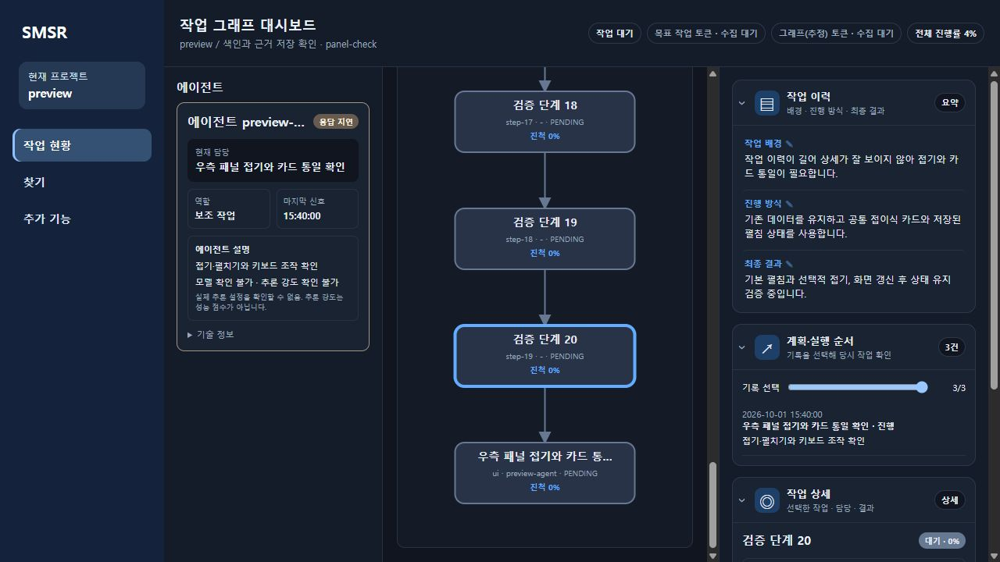
get_graph_watch/get_graph_report를 확인했습니다.--background --ensure-server --skip-codex-integration --skip-update-check로 자동 설정/업데이트 호출을 건너뛰었습니다. 사용자 자동 업데이트 설정 자체는 그대로이므로 이후 일반 시작에는 적용됩니다.D:/Gitsource/개인/SMSR/src/SMSR.App/bin/Release/net8.0-windows/SMSR.App.exe.D:/Gitsource/개인/SMSR/artifacts/app-deploy-backup-graphify-20261001-1740/application·database/smsr.db.src/SMSR.App/bin/Release/net8.0-windows.predeploy-graphify-20261001-1740. 브리지 프로세스가 사용 중이므로 삭제하지 않습니다.C:/Users/surromind/AppData/Local/SMSR/verification-backups/20261001-084353-020868/snapshot.db·restored.db. 폴더 시각은 UTC입니다.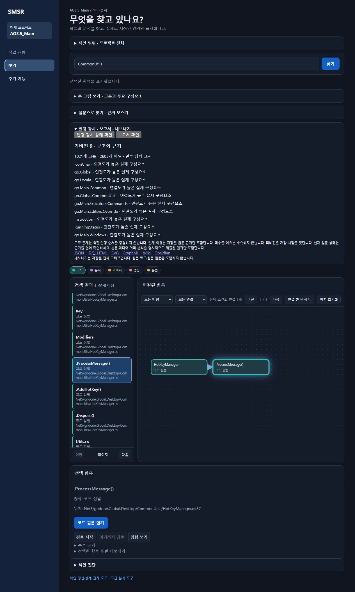
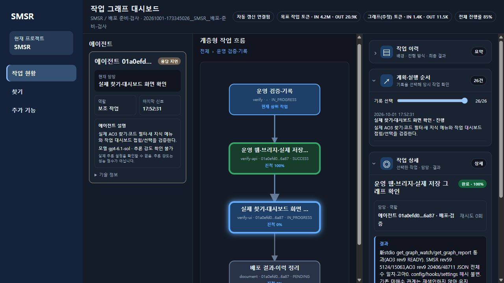
위 8·9절은 배포 당시 기록입니다. 이후 DB 백업·복원 검사를 먼저 마치고 기존 전체 프로젝트 범위를 Graphify 0.9.73으로 재색인했습니다. 일반 색인에 정적 관계 분석이 포함됩니다. 재색인 성공은 모든 심벌·호출의 해소를 뜻하지 않습니다.
| 프로젝트·리비전 | 파일 | 노드 | 관계 | 미해소 관계 | 상세/미분류 심벌 | 근거 없는 관계 |
|---|---|---|---|---|---|---|
| SMSR · 60 | 1,221 | 6,904 | 20,363 | 32,826 | 4,234 / 491 | 1,084 |
| AO3.5_Main · 10 | 2,603 | 31,399 | 66,341 | 63,960 | 15,472 / 13,299 | 44 |
미해소 수는 진단 대상이며 저장 관계 수의 부분집합으로 계산하지 않습니다. 두 프로젝트 고아 관계0·메타데이터 승격 불필요·검사 시 추가/변경/삭제0을 확인했습니다. 이후 이 결과 문서를 변경했으므로 SMSR의 다음 최신성 검사에는 문서 변경이 잡힐 수 있습니다. AO3 구문·외부 라이브러리·이벤트·동명/오버로드 제한은 남습니다.
GraphIndexService.IndexAsync → GraphMarkdown.Extract 원문106행, AO3 Net5/gridone.Commons/HotKeyManager.cs의 AddHotKey → RegisterHotKey 원문61행이 EXTRACTED/RESOLVED·Graphify0.9.73·현재 해시와 일치합니다. AO3 ProcessMessage의 외부 API와 이벤트 호출은 미해소 진단을 유지합니다.C:/Users/surromind/AppData/Local/SMSR/verification-backups/20261001-134940-972076의 snapshot.db/restored.db. 일관 스냅샷·복원 모든 테이블 건수 일치·무결성·외래키 검사 통과. 기존 기록을 덮어쓰거나 삭제하지 않았습니다.artifacts/graphify-acceptance-20261001-2310에 두 프로젝트 JSON·독립 HTML 4개를 저장했습니다. JSON 노드/관계가 위 수치와 일치·절단false. 전체 데이터 포함 여부와 보고서 표본 절단은 별개입니다. HTML의 페이지·그룹·검색·키보드·상세·CSP/외부 스크립트 없음 검사는 두 파일 모두 통과했습니다.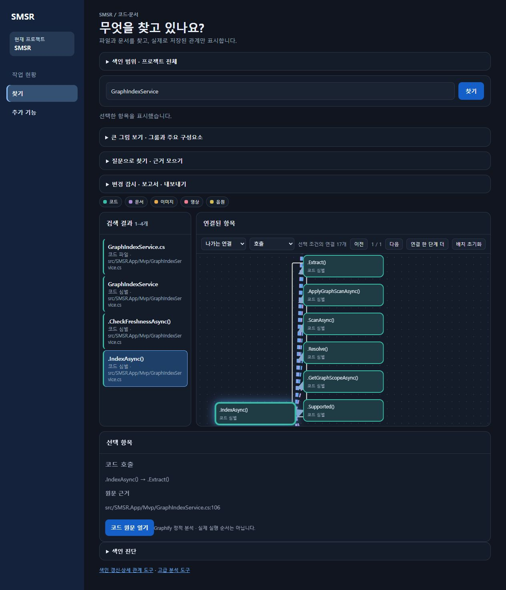
Graphify0.9.73의 기존 추출 사실과 유일한 AST 이름/행을 대조하며 새 심벌이나 외부 호출 대상을 추측해서 만들지 않습니다. C# 속성·인터페이스·구조체·열거형 항목·종료행을 보존하고 METHOD 관계에서 실제 클래스 소유를 연결합니다. 캐시 재사용에도 동일 정보가 적용됩니다. 형식v14로 두 프로젝트 전체를 재구축했습니다.
| 프로젝트 · 최신 리비전 | 파일 / 노드 / 관계 | 미분류 심벌 전→후 | 근거 없는 관계 전→후 | 미해소 진단 전→후 |
|---|---|---|---|---|
| SMSR · 61 | 1,228 / 6,930 / 20,434 | 491 → 244 | 1,084 → 0 | 32,826 → 32,889 |
| AO3.5_Main · 11 | 2,603 / 31,399 / 66,343 | 13,299 → 5,848 | 44 → 0 | 63,960 → 63,958 |
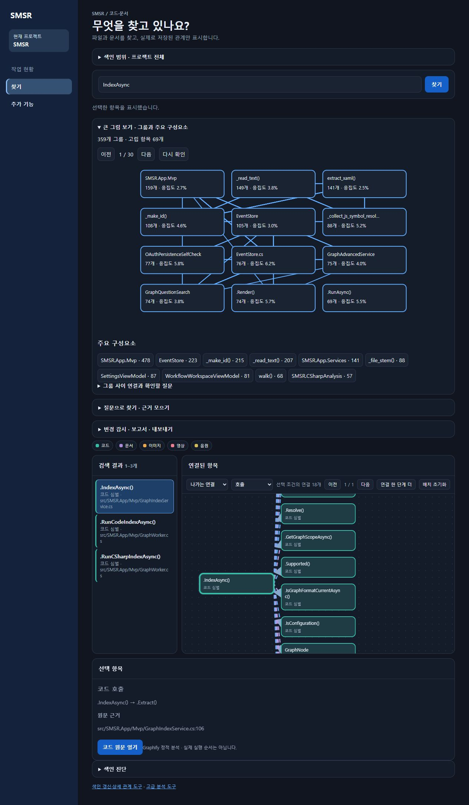
원본 Graphify0.9.73의 58모듈은 변경하지 않았습니다. SMSR 어댑터와 공유 색인·보고서 경로를 보강했습니다. 아래 수치는 최종 분석 검증 스냅샷이며 이 결과 문서 자체의 후속 색인은 별도 리비전입니다.
| 검증 스냅샷 | 파일 / 노드 / 관계 | 미분류 심벌 | 미해소 진단 | 보고서 |
|---|---|---|---|---|
| SMSR · rev63 | 1,239 / 6,955 / 20,524 | 244 → 234 | 32,889 → 34,016 | READY · 355그룹 |
| AO3.5_Main · rev13 | 2,603 / 31,399 / 66,372 | 5,848 → 5,730 | 63,958 → 65,757 | READY · 2,100그룹 |
ChatAOAIWindow.xaml을 검색하고 코드 파일을 선택합니다.DataSource="{Binding Items}"와 화면 근거를 대조합니다. 추가 근거 버튼으로22~25행도 확인합니다.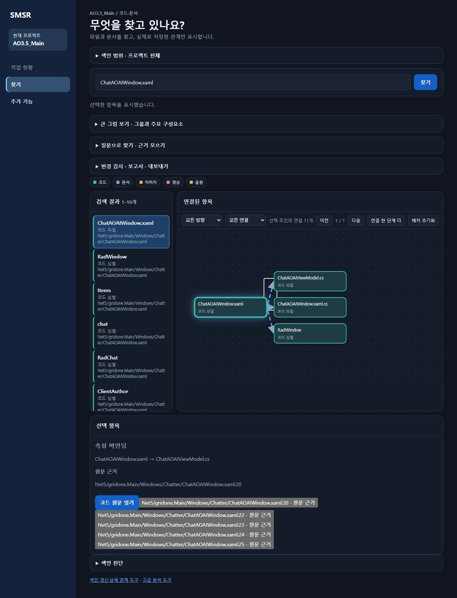
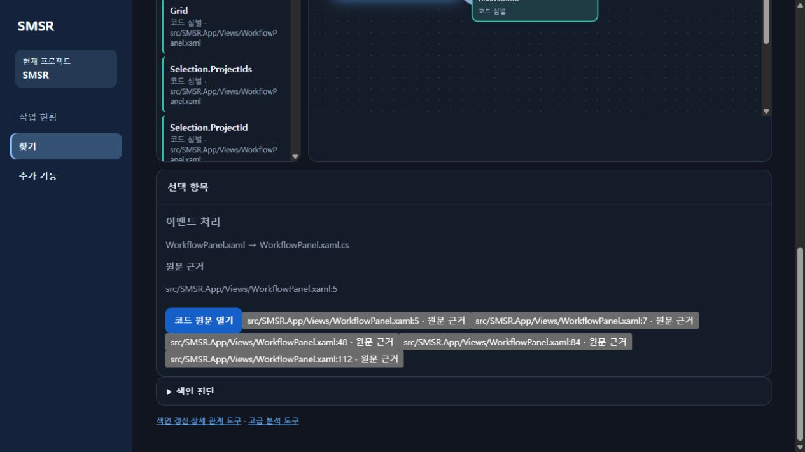
12개 분석 그룹을 페이지로 넘기는 지도를 프로젝트 전체 → 폴더 → 파일 내부 항목으로 바꿨습니다. 특정 프로젝트나 언어가 아니라 저장된 경로와 관계를 사용합니다. 문서·미디어도 같은 방식으로 표시합니다. 폴더가 설계 역할이나 실행 순서를 의미하지는 않습니다.
지도는 내부24·바깥8·연결 묶음80까지이며 나머지 항목은 건수 안내와 접힌 전체 목록에서 선택합니다. 서버 관계 요약은2,000개, 구조 조회는5만 노드/20만 관계로 제한하며 초과/생략을 안내합니다. 기존 상세 관계 조회는 유지합니다. 저장된 리비전을 읽으므로 소스 변경 뒤에는 별도 색인이 필요합니다.
일반 혼합 언어·문서·미디어, 한글/공백/깊은 경로, 빈 데이터, 5,000파일/5,150항목 샘플을 검증했습니다. SMSR/AO3 전용 분류는 넣지 않았습니다. 실제 포인터 관계 선택·원문 근거·파일/심벌 상세·드래그·초기화·그룹 검색을 확인했습니다.
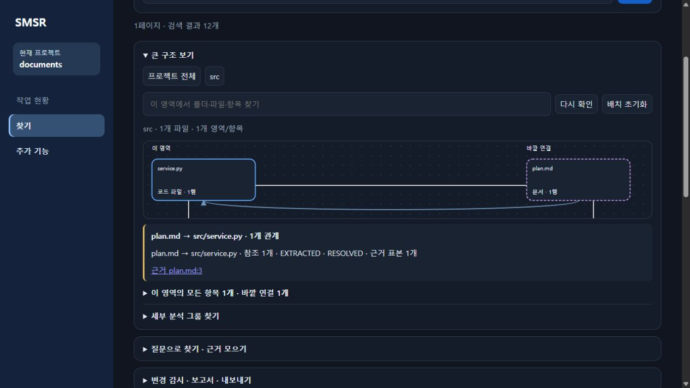
운영 반영: 백업 후 검증 후보를 설치·재시작했습니다. 실제 src/Net5 계층·바깥 연결·지도 밖 전체 목록 접근, HTTP ready·브리지 응답·설정 지문 불변을 확인했습니다. 두 프로젝트의 원본 파일·노드·관계 전체 행 지문과 리비전은 유지했으며 재색인하지 않았습니다. 상세 백업/검증 내역은 날짜별 개발 이력에 기록했습니다. 처음12개 루트 항목이 보이는 경우 실제 루트 경로 수이며, 기존 분석 그룹12개 표시 제한이 아닙니다.
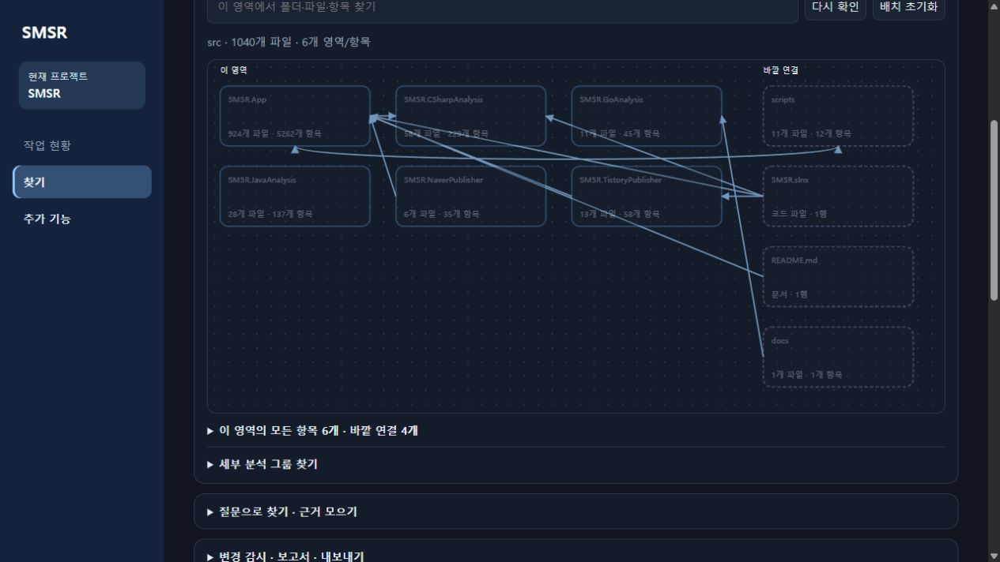